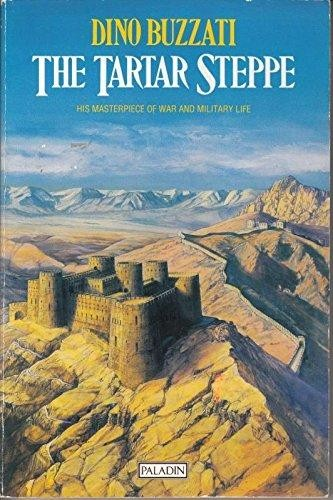
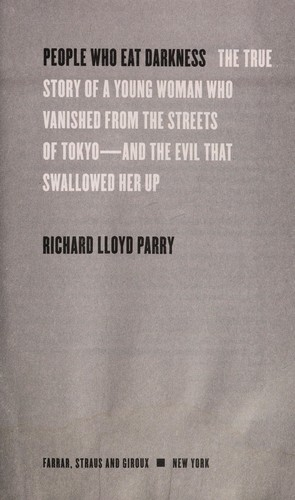
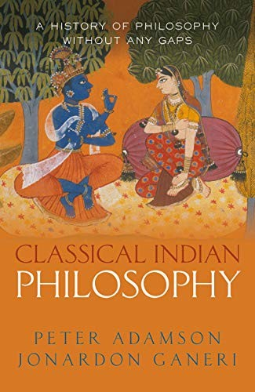
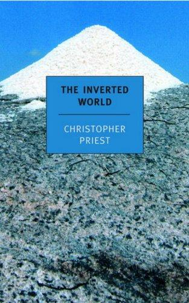
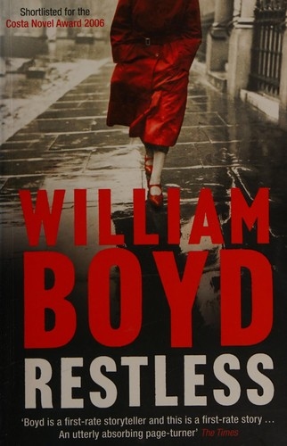
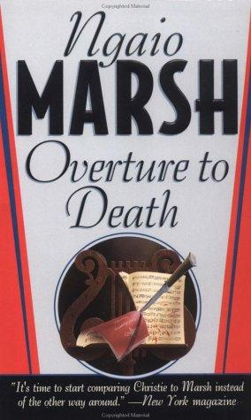

Recommendations for the week of 9 November 2026.
This week rotates three fresh highbrow edges: the translated-fiction thread reaches Italy for the first time with Buzzati's cold frontier-fort parable of a life spent waiting for a reckoning that never arrives; the true-crime edge returns with a forensic, unsentimental reconstruction of a disappearance inside the bafflingly alien machinery of Japanese justice; and the philosophy edge opens classical Indian thought — Nyāya logic, the arguments over the self — as the rigorous secondary summary the persona prefers over primary slabs. The comfort picks hold the three best-loved veins — big-idea SF, cold-weather espionage, Golden-Age crime — while reaching for fresh authors and clean structural hooks: a city that must travel forever on rails, a wartime spy whose past comes hunting thirty years late, and a village murder turning on a single booby-trapped piano.





